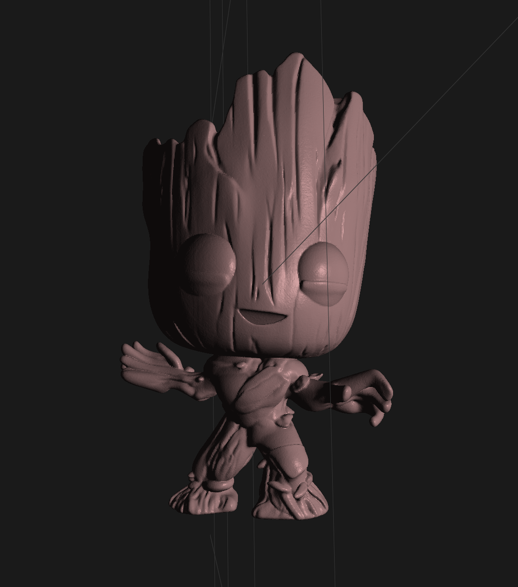
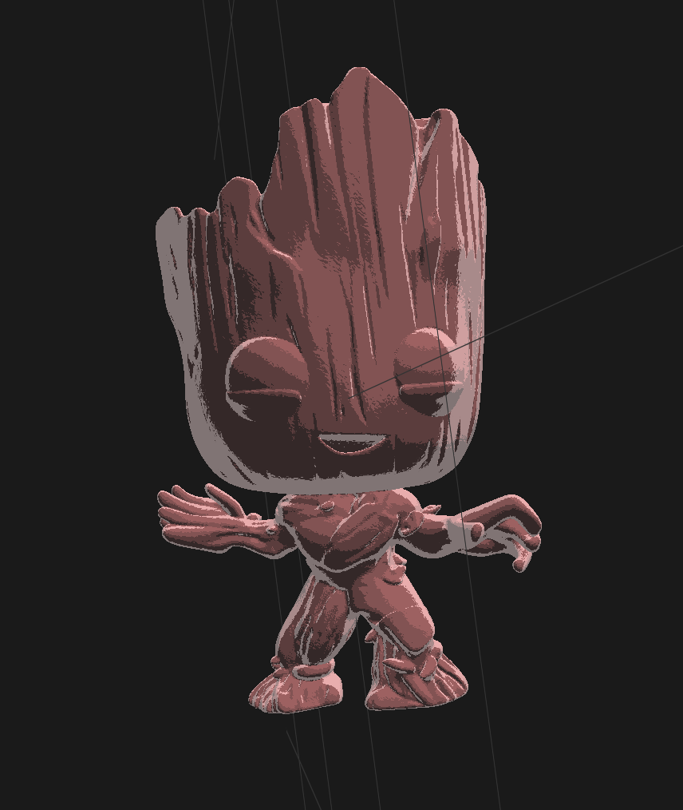

CS184/284A Spring 2025 Final Report: Non-photorealistic rendering machine
Link to webpage: https://cal-cs184-student.github.io/hw-webpages-ilovethomas/final-project/
Link to GitHub repository: https://github.com/biancanev/cs184-final-project
Abstract
Our project is a non-photorealistic rendering (NPR) machine that allows users to apply different artistic styles to 3D models in real-time. We started from scratch with just a blank C++ file. For our final product, we created an OpenGL/Imgui interface that is able to properly display three distinct shading techniques: sketch shading, cel shading, and watercolor shading. Sketch shading offers a hand-drawn look through the use of density varying cross-hatching. Cel shading creates a cartoonish look by discretizing a diffuse or specular shader, creating noticable bands. Watercolor shading simulates painted textures through soft gradients and blooming distortions. The user can select the desired shading technique through our simple GUI and see the effect applied to the model in real-time. Our custom GUI offers the user complete control over the shading parameters used in our NPR shaders, lighting intensity and location, model attributes and camera position/orientation. One thing that separates our project from others is that everything is procedurally generated, instead of mapping the NPR features from textures.Technical Approach
GUI
The camera system is controlled through Position, Front, Up, Right, and Target vectors, with the camera orientation defined by Euler angles (Yaw, Pitch, Roll). The updateCameraVectors() method first computes the Front vector using spherical coordinates: Front.x = cos(Yaw) * cos(Pitch), Front.y = sin(Pitch), Front.z = sin(Yaw) * cos(Pitch). To handle roll, we first calculate the initial Right and Up vectors without roll using cross products: rightNoRoll = normalize(cross(Front, WorldUp)) and upNoRoll = normalize(cross(rightNoRoll, Front)). Then, we apply the roll rotation around the Front vector using trigonometry: Right.x = rightNoRoll.x * cos(rollRadians) + upNoRoll.x * sin(rollRadians), with similar calculations for the y and z components. Finally, the Up vector is recomputed as normalize(cross(Right, Front)). The camera tools capture mouse movement and update the appropriate vectors to be able to pan, orbit, zoom, tilt, rotate, and roll.
The object manipulation tools use a transformation matrix, matrix = translate * rotate * scale, or position. Each tool modifies the appropriate parameters through mouse movements translated by sensitivity. For scaling, we increase or decrease the scale value and ensure there are valid values above the minimum thresholds: Scale.x = fmax(0.01f, Scale.x + yoffset * ScaleSensitivity). Rotation transforms apply incremental changes to the Euler angles while ensuring they are normalized within a 0–360° range. Translation tools modify position directly.
The reference grid provides a reference for size, position and orientation. It is implemented as a flat surface with a grid shader. The grid is generated in the createGrid() which creates a quad mesh with just four vertices at (±halfSize, 0, ±halfSize) to form the plane. The grid's rendering uses a dedicated fragment shader (grid.frag) that creates anti-aliased grid lines: grid = abs(fract(coord - 0.5) - 0.5) / fwidth(coord), where fract() creates the repeated pattern and fwidth() creates consistent line thickness.
Sketch Shading
For sketch shading, a lot of papers such as this one used sketch textures of varying shading density and mapped it to the object. This felt a bit simple, so we decided to make a procedurally generated version. Using the same concept of varying sketch density with light we made a shader that used cross hatching to create a sketched look. One struggle we had is getting the generated cross hatching to look like natural pencil strokes rather than just diagonal lines. A couple ways we improved the organic look of the shader was by adding waviness to the lines, making the density gradient a power function rather than a linear function, and making the line colors a gradient of grayscale rather than just black and white.Cel Shading
Cel is quite closely related to Blinn-Phong shading. We adapted the shading algorithm from homework 4, but this time we discretized the diffuse lighting component of the shader as mentioned in this blog post. This creates the effect of bands on the models which creates a cartoonish look. With out implementation, we played around with different thresholds and number of bands and landed on using three bands to create a visually appealing look, striking the balance between simplicity and complexity. We further simplified the look by removing the specular component to create a more matted look. One issue that we encountered was that for some models, mesh vertices were not particularly smooth but rather jaggered, this caused the bands to appear more patchy and less smooth (check out baby Groot model). However, we found that with the right model (and texture), we are able to create a very convincing model with cel shading (Link model)!Watercolor Shading
The watercolor effect is related to the Phong shading model, but instead of using a simple diffuse and specular component, we use a more complex texture-based approach. We first sample the texture of the model and then apply a Gaussian blur to create a soft gradient effect. This simulates the blending of colors that occurs in watercolor painting. Additionally, we apply a bloom effect to enhance the light areas of the model, creating a glowing effect that is characteristic of watercolor paintings. The shader also incorporates noise to add a more organic feel to the rendering, mimicking the imperfections found in traditional watercolor art. Much like the sketch shader, current implementations of the watercolor shader often just use specular shading and textues to reate the watercolor look. We wanted to parameterize the process for more granular control over the final image.Results
GUI

Link Model
|
|

|

|

|
Groot Model
|

|
|
|

|

|
References
Contribuition from each team member
Lemuel Sumardy
I built upon Ryan's basic implementation of the GUI, by improving the UI/UX. This included features for camera control, model transformations, creating a reference plane, texture/color support, and general ease of use improvements.
- Ryan Kwong
- Implemented sketch shader
- Creaed the basic design for the GUI
- Lemuel Sumardy
- Added most of the features in the GUI
- Video editing
- Thomas Yeoh
- Implemented cel shader
- Ziran Zhou
- Implemented watercolor shader